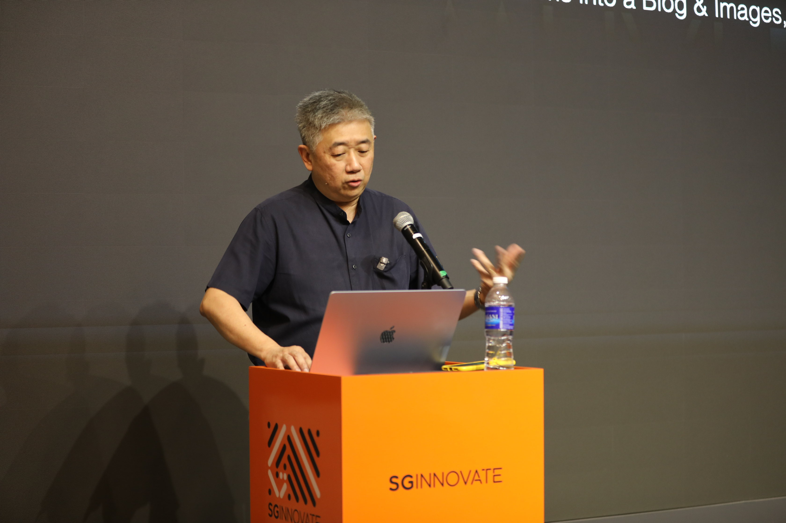

AI Content Pipeline
Jesse Sng
Brought a content pipeline that fans one piece of source material out into a podcast, blog, images, and audio in parallel. The conversation concentrated on orchestrating parallel generation, engineering error handling so effort is never discarded, and choosing image models when text-in-image matters.